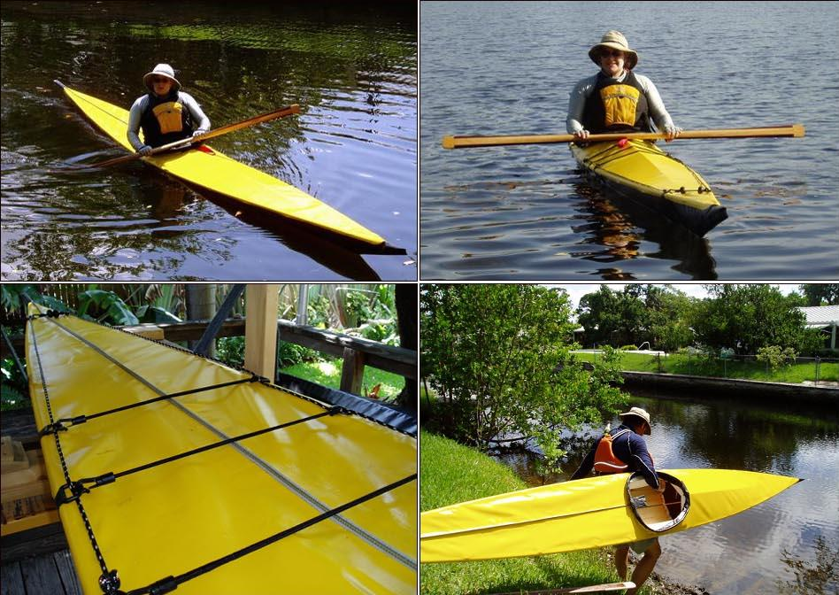

| Sea Rider / Sea Ranger by Hastings Read | Menu Previous Page Next Page |
|

Since completing his Sea Rider, Hastings constructed the Sea Ranger seen above. Sea Rider Modifications - Hastings has modified the Sea Rider aft deck height Aft Deck Height to allow more weight to be carried without swamping the deck immediately behind the coaming. Use the (BACK) key to return. Another modification Hastings has added to the Sea Rider is a cable tensioning system for greater frame stiffness. Use the (BACK) key to return. |
|